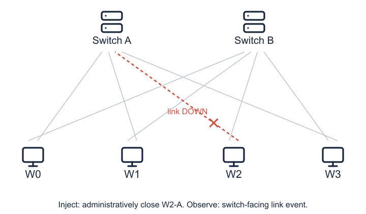
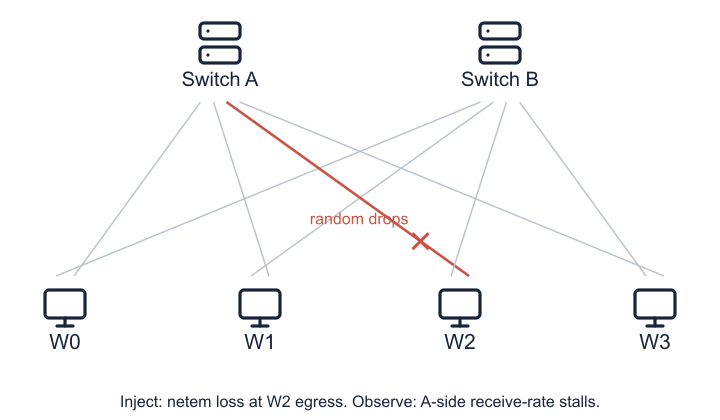

Current mechanisms and experiment record
CPU / Mininet / TCP prototype. Four emulated hosts each connect to A and B. The switches have no direct link. Animations explain mechanisms, not measured playback speed or production NCCL behavior.
1. Healthy traffic
The eight cables are physical connections. A step chooses the path for each sender. In step 0, W0/W2 send on A and W1/W3 send on B. A receiver listens on the path chosen by its predecessor.
2. Hard failure

- Inject
- Administratively close
w2-eth0withip link set ... down. This interrupts both directions of W2's A access link. - Observe
- Subscribe to Linux netlink link-state events on the switch-facing peer
sA-eth3. A down notification triggers suspicion without waiting for the 20 ms RX-counter poll. - Why useful
- The injection and observation points are separate. This tests an event-driven hard-failure control path. It does not measure physical transceiver detection or a hardware interrupt.
- Clock
- Start of the interface-down command to
SWITCH_SUSPECT. Three repeats below 1 ms do not establish a worst-case guarantee. The old configured gate was 10 ms.
| Repeat | Detection | Below 1 ms |
|---|
3. Gray loss

- Inject
- Linux
tc/netemapplies random loss atw2-eth0egress. Six levels: 0.5%, 1%, 2%, 5%, 10%, and 25%. The configured rate stays 100 Mbit/s and the interface stays UP. - Observe
- Read
sA-eth3RX bytes about every 20 ms. Infer rate from byte and time differences. The detector never reads the injector qdisc. - Rule
- The burst-aware rule uses sub-baseline burst samples and unusually long silence. AA13 adds one valid burst sample below 30% of the learned baseline as a fast trigger. Zero-rate idle gaps follow a separate silence rule.
- Why plausible
- Packet loss can cause TCP recovery stalls visible in incoming traffic. This is a symptom detector, not a direct loss-rate estimator. Other pauses can produce similar symptoms, so production specificity remains unproven.
- Clock
- Injection command completion to suspicion. AA11 and AA13 are detector-only campaigns with recovery disabled. Below-100-ms counts compare the measurements with the requested target, not an automatic run gate.
| Loss | Repeat 1 | Repeat 2 | Repeat 3 | Below 100 ms |
|---|
AA13 detected 18/18 faults, with 6/18 below 100 ms. AA11 detected 18/18, with 0/18 below 100 ms. These measurements do not establish reliable packet-loss recovery.
4. Recovery
Prepare a common plan, collect READY from all workers, and commit its activation round/step. Endpoints select existing B connections, close affected A sockets to unblock I/O, retry interrupted work, and validate framed data. The bad link remains bad.
Hard link-down changes W2's and W1's A-send slots, six in total. A directed gray egress fault changes W2's three A-send slots if switching passes the impact and capacity policy. All-rank coordination does not mean all traffic reroutes.
Hard failure requires a healthy alternate path. The gray-loss policy switches when estimated B spare capacity × 1.25 covers A's pre-fault demand. Otherwise it stays. This estimate is workload-specific, not a measurement of every bottleneck in the network.
Open recovery animation and measured timelines
| Fault / repeat | Commit | First complete recovery step |
|---|
Rate cap is a separate gray-fault type, not packet loss. A committed plan does not yet prove that communication has completed. Under automatic 25% loss switching, 2/3 runs completed. The third committed then failed with an EOF / communication error. Its exact root cause still needs investigation.
5. Experiment record
Loading local experiment records…
| Campaign | Design | Runs | Completed |
|---|
M3a retention comes from raw round-level throughput: selected-period median divided by that arm's own baseline median. Oracle switch arms measure switching cost, not automatic detection. M4b's constrained stay arm uses B at 10 Mbit/s and 25% loss, unlike the M3a B50/5% loss comparison.
Show all 93 runs with source links
| Campaign / run | Loss | B rate | Status | Detect ms | Commit ms after alert | First step ms after alert | Policy | Retention |
|---|
Decisions for the next milestone
Does the current dual-homed CPU baseline match the intended milestone? Should the next experiment prioritize high-loss recovery reliability or lower low-loss detection latency? A stronger traffic baseline and GPU/NCCL integration remain separate validation steps.